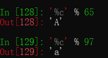
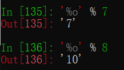

原文出处:本文由博客园博主纪宇-年华提供。
原文连接:https://www.cnblogs.com/jiyu-hlzy/p/11743125.html
原文连接:https://www.cnblogs.com/jiyu-hlzy/p/11743125.html
- 字符串的四种拼接方法，常用格式化
- deepcopy（深复制）
- bytes 和 bytearray 的基本用法
字符串拼接
使用 +
格式化字符串
使用join
用单引号内的字符来拼接，参数填一个整体

使用format ，占位符：{}
字符串格式化输出
% 规定了对应位置的值只能填对应的类型
%s %字符串
%d %数字(十进制)
%f %浮点数
%s 与 %r 的区别，一个输出不带引号，一个输出带引号
其它了解即可
%c %ASCII字符

%o 转换成8进制

%x 转换成16进制
%e 转换成科学计数法
%与字母之间的数字
小数点左边的数字代表总长度（若数字小于字符串实际长度，则取字符串实际长度，若大于，则以空格填充）
小数点右边的数字规定小数位数
负号代表左对齐
format格式化输出
%换成了冒号，其它都与上类似
数字对长度的应用，以及填充
转义符号 {{}} 输出 {}
把format当作一个函数来看
深浅复制（列表嵌套列表时）
浅复制
深复制
浅复制第一层不会受到原来列表的影响，内层会被影响
浅复制时，内层ID是一样的，指向同一个内存地址
深复制内外层都不会受影响